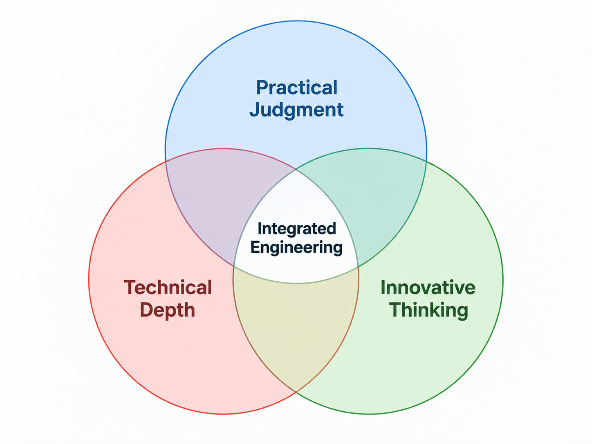

01
Analysis & Design
Bridge and transportation structural analysis and design with attention to mechanics, performance, and constructability.
The effective and efficient infrastructure engineering solutions emerge when technical depth, practical judgement, and innovative thinking are integrated.

OVERVIEW
His work focuses on the analysis, design, and maintenance of bridges and transportation structures, with particular emphasis on design, mechanics, constructability, nondestructive testing, and experimental investigations into design methodologies to improve structural reliability, performance, and extend service life.
He has also contributed to emerging digital approaches such as NDT and digital twins in transportation infrastructure asset management.
CORE FOCUS AREAS
Bridge and transportation structural analysis and design with attention to mechanics, performance, and constructability.
Maintenance-oriented engineering thinking, service-life extension, asset performance, and data-driven management approaches.
Nondestructive testing, inspection-informed engineering, field testing, and experimental validation of structural behavior.
Rehabilitation strategies, strengthening concepts, structural reliability, resilience, and improved long-term performance.
SELECTED PUBLICATIONS
Selected peer-reviewed conference papers highlighting advanced bridge analysis, substructure design, soil–structure interaction, and practical implementation of refined engineering methods.
This paper presents a case study based on an independent design review of a four-span continuous post-tensioned cast-in-place segmental bridge in Colorado. The work integrates construction-stage analysis, creep and shrinkage, moment–curvature-based substructure stiffness, and foundation stiffness matrices derived from soil–structure interaction analysis to capture the bridge response under static, dynamic, and time-dependent loading.
View publication ↗This paper examines the design of complex bridge substructures using the strut-and-tie method, including inverted-T and hammerhead pier caps supported by single columns. The study addresses deep-beam behavior, nonlinear stress trajectories in D-regions, STM modeling, design checks, reinforcement detailing, and practical recommendations for bridge substructure design.
View publication ↗This peer-reviewed study evaluates the applicability of ground-penetrating radar (GPR) and phased-array ultrasonic (PAU) methods for detecting damage in fiber-reinforced polymer reinforced concrete elements. Three slab specimens with different FRP types, bar depths, diameters, and simulated defects were investigated to establish the detection capabilities and limitations of these NDT techniques.
View publication ↗INTEGRATED DIGITAL WORKFLOW
Jiayi develops integrated digital workflows that connect established structural analysis and design platforms, including OpenBridge, CSI-Bridge, LARSA 4D, and FB-MultiPier. Rather than relying on a single software package, he leverages the strengths of specialized tools for different stages of the engineering process and develops workflows that connect them into a coordinated solution.
His work includes automating model and loading preparation, transferring information between software platforms, and post-processing large volumes of analysis results into clear visualizations and engineering summaries. These workflows help engineers better understand structural behavior, identify critical demands and demand-to-capacity ratios, evaluate vulnerabilities, and make informed design decisions.
By combining proven engineering software with customized tools and automation, complex structural problems can be solved more efficiently while maintaining transparency, engineering judgment, and technical rigor.
TECHNICAL EXPERTISE
His research and professional activities span both analytical, design, and management domains, bridging mechanics, design, inspection, field testing, and data-driven asset management. His work encompasses the behavior and performance of complex bridge systems under service and extreme conditions, as well as the validation of analytical models through experimental and field-based studies.
He is actively engaged in advancing innovative methodologies that enhance the reliability, resilience, and sustainability of transportation infrastructure.
EDUCATION
Academic training in structural engineering complemented by executive education in leadership, finance, strategy, decision-making, and communication.
Executive Education · Stanford LEAD Program
Leadership, financial acumen, strategic thinking, decision-making, and communication. Coursework included Finance, Critical Analytical Thinking, Design Thinking, Strategic and Intentional Leadership, Business Model Analysis, Decision-Making, Change and Organizational Friction, Storytelling, Persuasion, Communication, and Negotiation.
Doctor of Philosophy (PhD) · Civil Engineering (Structures)
Recipient, University Graduate School Provost Fellowship. President, SEI Student Chapter at Florida International University.
Master of Science (MS) · Civil Engineering (Structures)
Advanced Concrete and Steel Design, Prestressed Concrete, Finite Element Analysis, Dynamics, Earthquake Engineering, Topology Optimization, and Seismic Steel Detailing.
Bachelor of Engineering · Civil Engineering
Honor Graduate.
PROFESSIONAL ENGAGEMENT
In addition to his technical contributions, he is involved in collaborative, multidisciplinary efforts that promote advancement of structural engineering practice.
As a member of the American Society of Civil Engineers (ASCE), he engages with professional communities and supports the dissemination of emerging technologies and state-of-the-art practices in structural engineering, with a focus on integrating digital parametric design techniques.